import pandas as pd
import numpy as np
import pandas_datareader as pdr
import statsmodels.api as sm
import statsmodels.tsa.stattools as stL19: Robust timeseries regression
Lecture overview
- Coverage
- We only cover “static” models (of the type \(y_{t+k} = \alpha + \beta \cdot X_t + \epsilon_{t+k}\))
- We do not cover dynamic models (e.g. ARIMA models or VAR models which include lags of the dependent variable as explanatory variables)
- We do not cover conditional heteroskedasticity models (e.g. ARCH and GARCH models of the variance of the error term)
- Dealing with autocorrelated errors (failure of assumption A3)
- Newey-West correction
- Dealing with non-stationary variables (failure of assumption A2)
- Test for stationarity
- Common ways to address non-stationarity
- First-differencing
- Detrending
Application
The showcase the tools in this lecture, we will develop a (somewhat crude) test of the Expectations Hypothesis of the term structure of interest rates. In a nutshell, this hypothesis claims long-term rates should equal compounded future expected short-term rates:
\[ (1 + r_{t,t+N})^N = (1 + E_t(r_{t,t+1}))(1 + E_t(r_{t+1,t+2}))...(1 + E_t(r_{t+N-1,t+N})) \]
Assuming rational expectations, future realized short-term rates should on average match current expectations of those rates. If this is the case, one way we can test the Expectations Hypothesis by testing if current long-term rates can predict future short-term rates.
To implement this test, we use the yield on 10-year Treasury bonds as our long-term rate, and the yield on the 3-month Treasury bill as our short-term rate. We then regress the 3-month rate from 5 years in the future on the current 10-year rate
\[r^{3m}_{t+5} = \alpha + \beta \cdot r^{10yr}_t + \epsilon_{t+5} \]
Yes, the 5-year horizon is quite arbitrary (we should be testing all horizons up to 10 years at the same time), hence my calling it a “somewhat crude” test. The purpose of this application is to showcase the common statistical issues one often encounters in time-series regressions. See this paper https://core.ac.uk/download/pdf/6956537.pdf for more thorough tests of the hypothesis.
We start by downloading data on the two rates (monthly frequency, not seasonally adjusted) and running the regression mentioned above. The rest of the lecture describes two main issues with this regression (non-stationarity and autocorrelated errors) and describes common tools used to address these issues.
Preliminaries
# Download monthly data on 3month and 10yr treasury yields from St Louis FRED
rates = pdr.DataReader(['TB3MS','GS10'],'fred','1954-01-01')
rates.plot();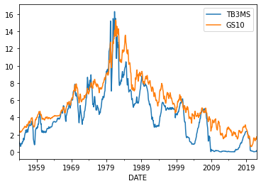
# Cleanup
# Change index to montly period
rates.index = rates.index.to_period('M')
# Rename variables
rates.rename(columns = {'TB3MS': 'r_3m', 'GS10': 'r_10yr'}, inplace = True)
rates | r_3m | r_10yr | |
|---|---|---|
| DATE | ||
| 1954-01 | 1.18 | 2.48 |
| 1954-02 | 0.97 | 2.47 |
| 1954-03 | 1.03 | 2.37 |
| 1954-04 | 0.97 | 2.29 |
| 1954-05 | 0.76 | 2.37 |
| ... | ... | ... |
| 2021-09 | 0.04 | 1.37 |
| 2021-10 | 0.05 | 1.58 |
| 2021-11 | 0.05 | 1.56 |
| 2021-12 | 0.06 | 1.47 |
| 2022-01 | 0.15 | 1.76 |
817 rows × 2 columns
# Calculate future levels of the short rate (m3)
rates['r_3m_lead5'] = rates['r_3m'].shift(-60) #because 60 months = 5 years
rates| r_3m | r_10yr | r_3m_lead5 | |
|---|---|---|---|
| DATE | |||
| 1954-01 | 1.18 | 2.48 | 2.82 |
| 1954-02 | 0.97 | 2.47 | 2.70 |
| 1954-03 | 1.03 | 2.37 | 2.80 |
| 1954-04 | 0.97 | 2.29 | 2.95 |
| 1954-05 | 0.76 | 2.37 | 2.84 |
| ... | ... | ... | ... |
| 2021-09 | 0.04 | 1.37 | NaN |
| 2021-10 | 0.05 | 1.58 | NaN |
| 2021-11 | 0.05 | 1.56 | NaN |
| 2021-12 | 0.06 | 1.47 | NaN |
| 2022-01 | 0.15 | 1.76 | NaN |
817 rows × 3 columns
# Save data for next time
rates.to_pickle('../data/rates.pkl')Descriptive statistics
We start by just summarising the data and looking at correlations of the variables. With time-series regressions,we want to pay particular attention to how autocorrelated our variables are.
rates.describe()| r_3m | r_10yr | r_3m_lead5 | |
|---|---|---|---|
| count | 817.000000 | 817.000000 | 757.000000 |
| mean | 4.203684 | 5.656732 | 4.373804 |
| std | 3.127007 | 2.928016 | 3.177423 |
| min | 0.010000 | 0.620000 | 0.010000 |
| 25% | 1.720000 | 3.590000 | 1.950000 |
| 50% | 4.020000 | 5.110000 | 4.440000 |
| 75% | 5.770000 | 7.430000 | 6.040000 |
| max | 16.300000 | 15.320000 | 16.300000 |
rates.corr()| r_3m | r_10yr | r_3m_lead5 | |
|---|---|---|---|
| r_3m | 1.000000 | 0.928602 | 0.579861 |
| r_10yr | 0.928602 | 1.000000 | 0.585391 |
| r_3m_lead5 | 0.579861 | 0.585391 | 1.000000 |
pd.plotting.scatter_matrix(rates, figsize = (6,6));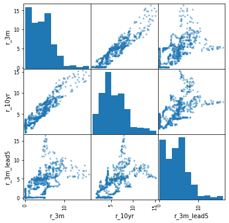
Always look at autocorrelations in your data before you run a time-series regression:
rates['r_3m'].autocorr()0.9915536423981736rates['r_10yr'].autocorr()0.9959134840414957The above are just one-period (1 month) autocorrelations. We can look at all autocorrelations (all lags):
pd.plotting.autocorrelation_plot(rates['r_3m']);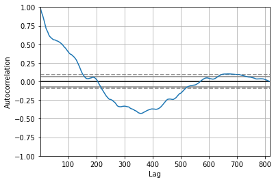
Linear regression
We start by running the simple regression of future short term rates on current long-term rates:
\[r^{3m}_{t+5} = \alpha + \beta \cdot r^{10yr}_t + \epsilon_{t+5} \]
# Add a constant
rates['const'] = 1# Regress future short rate on current long rate
results = sm.OLS(rates['r_3m_lead5'], rates[['const','r_10yr']], missing = 'drop').fit()
print(results.summary()) OLS Regression Results
==============================================================================
Dep. Variable: r_3m_lead5 R-squared: 0.343
Model: OLS Adj. R-squared: 0.342
Method: Least Squares F-statistic: 393.6
Date: Fri, 25 Feb 2022 Prob (F-statistic): 8.02e-71
Time: 14:39:54 Log-Likelihood: -1790.0
No. Observations: 757 AIC: 3584.
Df Residuals: 755 BIC: 3593.
Df Model: 1
Covariance Type: nonrobust
==============================================================================
coef std err t P>|t| [0.025 0.975]
------------------------------------------------------------------------------
const 0.4650 0.218 2.131 0.033 0.037 0.893
r_10yr 0.6567 0.033 19.840 0.000 0.592 0.722
==============================================================================
Omnibus: 128.789 Durbin-Watson: 0.030
Prob(Omnibus): 0.000 Jarque-Bera (JB): 240.051
Skew: 1.005 Prob(JB): 7.48e-53
Kurtosis: 4.889 Cond. No. 15.6
==============================================================================
Notes:
[1] Standard Errors assume that the covariance matrix of the errors is correctly specified.The low p-value for the r_10yr coefficient tells us that the long rate is a strong predictor of the future short rate, which is consistent with the Expectations Hypothesis.
Dealing with non-stationarity
A “stationary” time-series process is a process that has a constant mean and variance over time, and autocorrelations depend only on the lag, not on the time period itself (technically speaking, such processes are called “covariance-stationary” or “weakly-stationary” but these are usually shortened to “stationary”).
If the variables in our time-series regression are non-stationary, the regression estimates are not reliable because non-stationarity can cause: - A “spurious correlation” between the two variables (variables may look highly correlated when in fact they are not economically related in any way) - This is a failure of assumption A2 - This leads to a bias in the regression coefficients (affects conclusions on economic significance) - Heteroskedasticity and autocorrelation in the regression residuals - This is a failure of assumption A3 - In thise case, t-statistics and p-values will be miscalculated (affects conclusions on statistical significance)
Testing for stationarity (unit root tests)
Before you run ANY time series regression, you need to first test if the variables in your regression are stationary (such tests are commonly referred to as “unit root tests”). There are several test you could use for this purpose, but one of the most common ones is the Augmented Dickey-Fuller test (ADF). You can implement this test using the “adfuller” function from the “statsmodels.tsa.stattools” package (“st” below).
The null hypothesis in the ADF test is that the series is non-stationary. So if the test returns a small p-value (e.g smaller that 1%), we can conclude that the series does not suffer from non-stationarity.
# Test if short rate is not stationary
adf_m3 = st.adfuller(rates['r_3m_lead5'].dropna())
print("P-value = ", adf_m3[1])
print("\nAll results:")
adf_m3P-value = 0.3021083944344449
All results:(-1.9650413351510605,
0.3021083944344449,
20,
736,
{'1%': -3.4392661055744767,
'5%': -2.86547495466493,
'10%': -2.56886540295664},
583.7846147439693)The p-value above is larger than 1% so we can not conclude that the short rate is non-stationary.
# Test if long rate is not stationary
adf_y10 = st.adfuller(rates['r_10yr'].dropna())
print("P-value = ", adf_y10[1])P-value = 0.7806902727097635The p-value above is larger than 1% so we can not conclude that the long rate is non-stationary.
First-differencing
The most commonly used method to convert a non-stationary series into a stationary series it to first-difference it (i.e. current level minus the previous level of the series). Technically, this assumes that the non-stationary series has “order of integration 1” which is the case for most economic series of interest. You don’t need to understand what that means for this class. I am only mentioning it so you understand that sometimes, first-differencing may NOT produce a stationary series. In such cases, a second-difference may help: take a first-difference of the first-difference. Alternatively, use the detrending methods in sections 3.3. and 3.4. below.
# Calculate first diferences
rates['r_3m_change'] = rates['r_3m_lead5'].diff()
rates['r_10yr_change'] = rates['r_10yr'].diff()# Take a look at the differenced series
rates[['r_3m_change','r_10yr_change']].plot();
rates.dropna(inplace = True)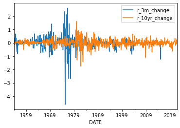
# Look at autocorrelation of differenced short rate
rates['r_3m_change'].autocorr()0.3301913374751896It looks like the 1-month autocorrelation is still quite high. But, if we look at the autocorrelation plot (the gray lines are 95% confidence intervals), most of these autocorrelations are statistically insignificant.
pd.plotting.autocorrelation_plot(rates['r_3m_change']);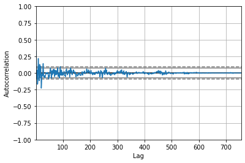
Again, to formally test if we still have a non-stationary problem, we run a ADF test:
# Test if differenced short rate is non-stationary
adf_m3 = st.adfuller(rates['r_3m_change'].dropna())
print("P-value = ", adf_m3[1])P-value = 4.8474710656084215e-08The p-value is virtually 0, so we can reject the null of non-stationarity for the first-differenced short rate.
# Test if differenced long rate is non-stationary
adf_y10 = st.adfuller(rates['r_10yr_change'].dropna())
print("P-value = ", adf_y10[1])P-value = 1.617988023356004e-11Again, the p-value is virtually 0, so we can reject the null of non-stationarity for the first-differenced long rate too.
# Re-run regression using differenced variables
results = sm.OLS(rates['r_3m_change'], rates[['const','r_10yr_change']], missing='drop').fit()
print(results.summary()) OLS Regression Results
==============================================================================
Dep. Variable: r_3m_change R-squared: 0.001
Model: OLS Adj. R-squared: 0.000
Method: Least Squares F-statistic: 1.099
Date: Fri, 25 Feb 2022 Prob (F-statistic): 0.295
Time: 14:39:54 Log-Likelihood: -408.69
No. Observations: 756 AIC: 821.4
Df Residuals: 754 BIC: 830.6
Df Model: 1
Covariance Type: nonrobust
=================================================================================
coef std err t P>|t| [0.025 0.975]
---------------------------------------------------------------------------------
const -0.0035 0.015 -0.233 0.816 -0.033 0.026
r_10yr_change 0.0586 0.056 1.048 0.295 -0.051 0.168
==============================================================================
Omnibus: 450.788 Durbin-Watson: 1.341
Prob(Omnibus): 0.000 Jarque-Bera (JB): 27983.939
Skew: -1.902 Prob(JB): 0.00
Kurtosis: 32.562 Cond. No. 3.69
==============================================================================
Notes:
[1] Standard Errors assume that the covariance matrix of the errors is correctly specified.# Obtain HAC standard errors
results_hac = results.get_robustcov_results(cov_type = 'HAC', maxlags = 5)
print(results_hac.summary()) OLS Regression Results
==============================================================================
Dep. Variable: r_3m_change R-squared: 0.001
Model: OLS Adj. R-squared: 0.000
Method: Least Squares F-statistic: 0.9896
Date: Fri, 25 Feb 2022 Prob (F-statistic): 0.320
Time: 14:39:54 Log-Likelihood: -408.69
No. Observations: 756 AIC: 821.4
Df Residuals: 754 BIC: 830.6
Df Model: 1
Covariance Type: HAC
=================================================================================
coef std err t P>|t| [0.025 0.975]
---------------------------------------------------------------------------------
const -0.0035 0.018 -0.199 0.842 -0.038 0.031
r_10yr_change 0.0586 0.059 0.995 0.320 -0.057 0.174
==============================================================================
Omnibus: 450.788 Durbin-Watson: 1.341
Prob(Omnibus): 0.000 Jarque-Bera (JB): 27983.939
Skew: -1.902 Prob(JB): 0.00
Kurtosis: 32.562 Cond. No. 3.69
==============================================================================
Notes:
[1] Standard Errors are heteroscedasticity and autocorrelation robust (HAC) using 5 lags and without small sample correctionThese results differ from the non-differenced regression in a very crucial way: the p-value of the r_10yr_change variable is not lower than 1% anymore, so we can not reject the null that the long rate has no predictive power over the short rate. This contradicts the prediction of the Expectations Hypothesis that long rates should have statistically significant predictive power over short rates.
Controlling for deterministic trends
If we believe that our variables are non-stationary because of a deterministic trend (like a linear trend or a quadratic trend), then we can adjust for this by simply including these trends in our regression. To do this, we first create the trend variables (we will restrict ourselves to a linear trend and a quadratic trend), and then we simply add them to our regression.
# Create linear and quadratic trends
rates['linear_trend'] = range(rates['r_3m_lead5'].count())
rates['linear_trend'].plot();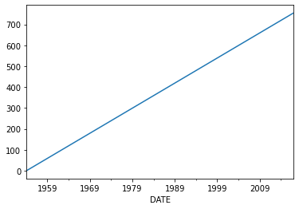
rates['quadratic_trend'] = rates['linear_trend']**2
rates['quadratic_trend'].plot();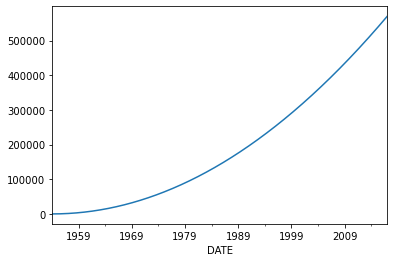
# Control for trends in our main regression directly
results = sm.OLS(rates['r_3m_lead5'],
rates[['const','r_10yr','linear_trend','quadratic_trend']], missing='drop'
).fit().get_robustcov_results(cov_type = 'HAC', maxlags = 5)
print(results.summary()) OLS Regression Results
==============================================================================
Dep. Variable: r_3m_lead5 R-squared: 0.575
Model: OLS Adj. R-squared: 0.573
Method: Least Squares F-statistic: 58.47
Date: Fri, 25 Feb 2022 Prob (F-statistic): 5.57e-34
Time: 14:39:54 Log-Likelihood: -1623.3
No. Observations: 756 AIC: 3255.
Df Residuals: 752 BIC: 3273.
Df Model: 3
Covariance Type: HAC
===================================================================================
coef std err t P>|t| [0.025 0.975]
-----------------------------------------------------------------------------------
const 2.9522 0.348 8.484 0.000 2.269 3.635
r_10yr 0.1978 0.096 2.057 0.040 0.009 0.387
linear_trend 0.0160 0.005 3.094 0.002 0.006 0.026
quadratic_trend -3.05e-05 7.29e-06 -4.182 0.000 -4.48e-05 -1.62e-05
==============================================================================
Omnibus: 214.109 Durbin-Watson: 0.041
Prob(Omnibus): 0.000 Jarque-Bera (JB): 593.941
Skew: 1.417 Prob(JB): 1.07e-129
Kurtosis: 6.290 Cond. No. 8.00e+05
==============================================================================
Notes:
[1] Standard Errors are heteroscedasticity and autocorrelation robust (HAC) using 5 lags and without small sample correction
[2] The condition number is large, 8e+05. This might indicate that there are
strong multicollinearity or other numerical problems.Note that even controlling for trends renders the long-rate statistically insignificant.
Eliminating stochastic (changing) trends (OPTIONAL)
In some cases, non-stationarity could be caused by trends that change over time (e.g. a linear trend in the first part of the sample, no trend in the middle, and a quadratic trend towards the end). In this case, the deterministic-trends approach from above may not accurately control for these trends and hence may not solve our non-stationarity problem.
In this circumstance, it is more appropriate to estimate these stochastic trends first (for each series). Then subtract these trends from the series and use these de-trended variables in our regression instead. The Hodrick-Prescott method is very commonly used for this purpose and it outputs the detrended series directly (as well as the estimated trend). This method can be implemented using the .tsa.filters.hpfilter() function in the statsmodel package, as below.
# Estimate stochastic trend in short rate using Hodrick-Prescott method
rates['r_3m_detrended'],rates['r_3m_trend'] = sm.tsa.filters.hpfilter(rates['r_3m_lead5'],lamb = 129600)
#IMPORTANT: we use this "lamb" value because we have monthly data.
#use lamb = 1600 for quarterly data and lamb = 6.25 for annual data
# Take a look at the short rate and its stochastic trend
rates[['r_3m_lead5','r_3m_trend']].plot(); 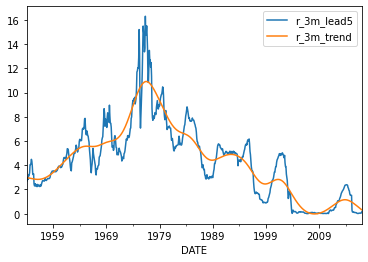
# Now take a look at the detrended short rate
rates['r_3m_detrended'].plot(); 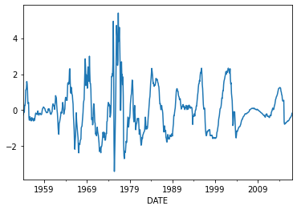
# Estimate stochastic trend in long rate using Hodrick-Prescott method
rates['r_10yr_detrended'],rates['r_10yr_trend'] = sm.tsa.filters.hpfilter(rates['r_10yr'],lamb = 129600)
# Take a look at the results
rates[['r_10yr','r_10yr_trend']].plot(); 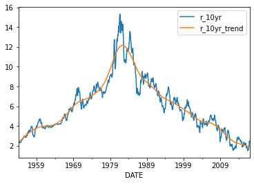
# Now take a look at the detrended long rate
rates['r_10yr_detrended'].plot(); 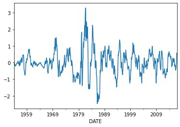
# Re-run regression using detrended series
results = sm.OLS(rates['r_3m_detrended'],
rates[['const','r_10yr_detrended']], missing='drop'
).fit().get_robustcov_results(cov_type = 'HAC', maxlags = 5)
print(results.summary()) OLS Regression Results
==============================================================================
Dep. Variable: r_3m_detrended R-squared: 0.006
Model: OLS Adj. R-squared: 0.004
Method: Least Squares F-statistic: 0.8779
Date: Fri, 25 Feb 2022 Prob (F-statistic): 0.349
Time: 14:39:55 Log-Likelihood: -1201.4
No. Observations: 756 AIC: 2407.
Df Residuals: 754 BIC: 2416.
Df Model: 1
Covariance Type: HAC
====================================================================================
coef std err t P>|t| [0.025 0.975]
------------------------------------------------------------------------------------
const 5.36e-12 0.097 5.5e-11 1.000 -0.191 0.191
r_10yr_detrended 0.1270 0.136 0.937 0.349 -0.139 0.393
==============================================================================
Omnibus: 83.839 Durbin-Watson: 0.120
Prob(Omnibus): 0.000 Jarque-Bera (JB): 133.609
Skew: 0.751 Prob(JB): 9.71e-30
Kurtosis: 4.410 Cond. No. 1.41
==============================================================================
Notes:
[1] Standard Errors are heteroscedasticity and autocorrelation robust (HAC) using 5 lags and without small sample correctionOnce again, detrending the data using stochastic trends also renders the long rate insignificant.